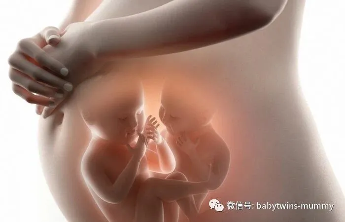
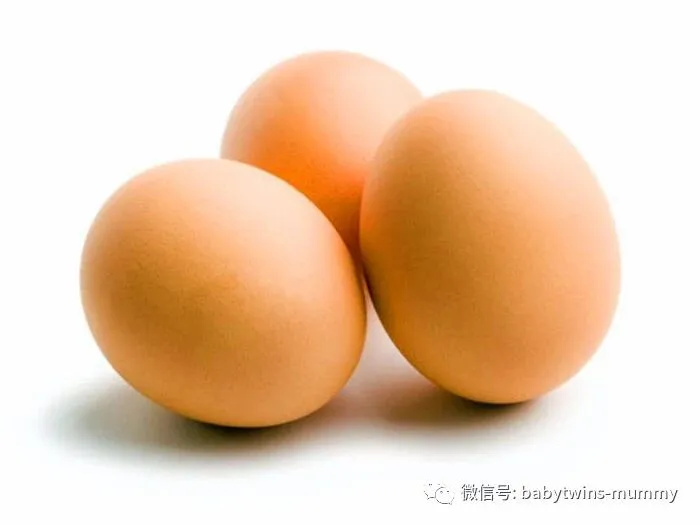
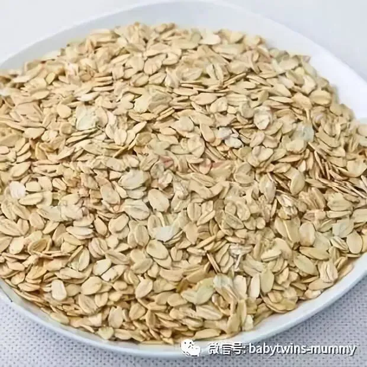
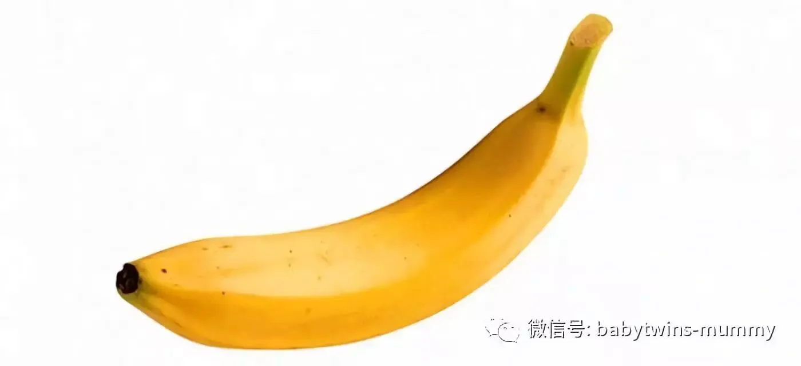
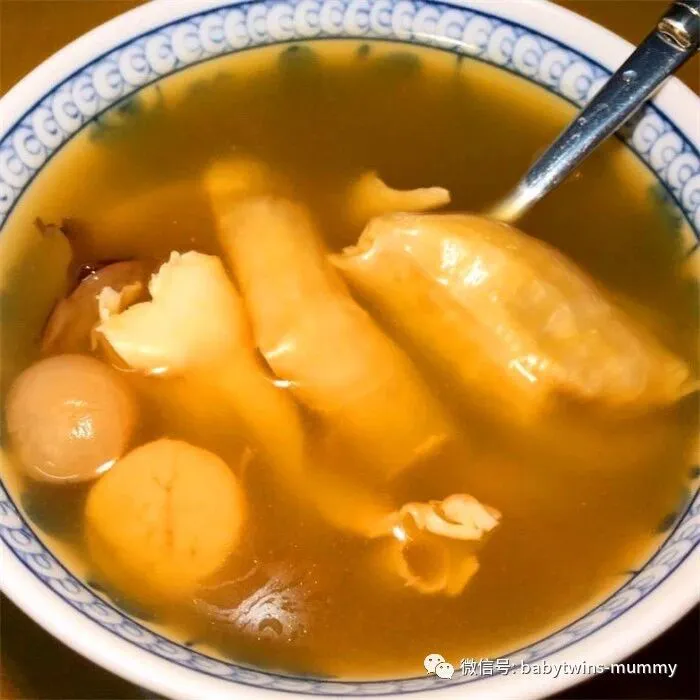
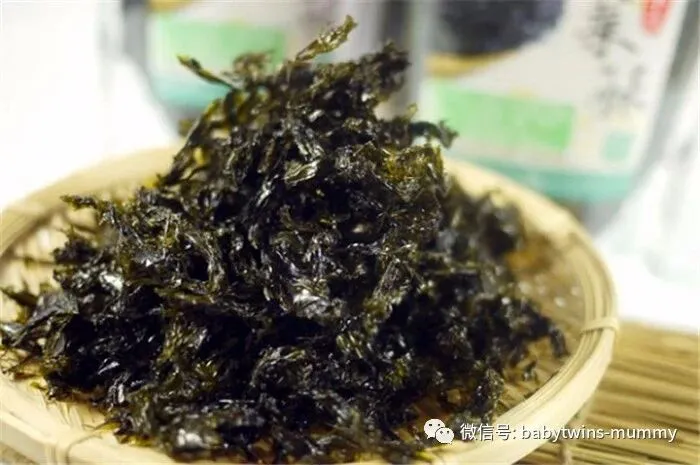
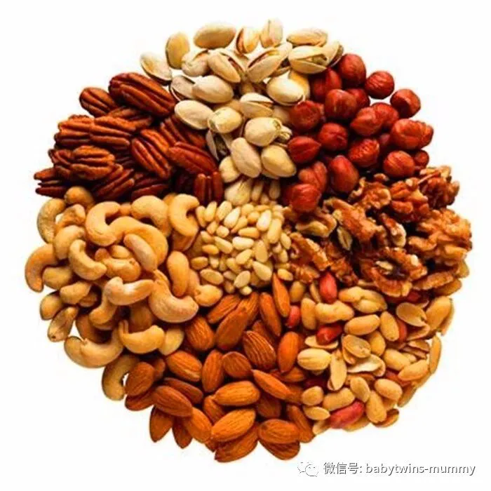
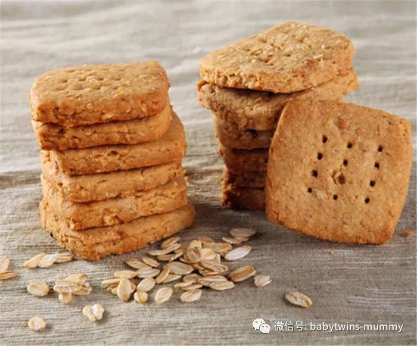

点击上方“孖仔帮”关注我们
孖仔帮
汇集全国各地及海外的双胎妈妈的交流园地
专门针对双胎孕期，喂养，教育等方面的经验分享
孖仔帮期待您的加入！
让我们一起成长，快乐育儿！
文|圆圈妈
01
近日，发现孖仔帮的妈妈群里有两个现象:
经常有很多宝妈求助，不知道孕期吃什么，吃多了怕胖，吃少了怕亏待了里面那两只。
已生的宝妈经常“教育”尚在孕期的妈咪：“没事，放宽心，后期长得快。”
01
其实不在乎吃多吃少，关键是吃什么，尤其是挑那些长胎不长肉的食物。正所谓“巧妇难为无米之炊”没有能量来源，胎宝宝如何长得快，长得好呢？
我35周+5生的圆圈兄弟，体重还行。
5.2斤/5.3斤，评分都是10分。
下面分享下长胎不长肉的8款食物。
1. 鸡蛋
鸡蛋含丰富蛋白质及人体所需的各种氨基酸，与人体蛋白质相近，有利胎儿成长，也会让孕妈妈在孕期皮肤变得光滑细腻。
这是我孕期吃的最多的食物了，而且是农村那种土鸡蛋。圆圈奶奶在老家把全村老母鸡下的蛋全部蚂蚁搬家似的搬到了深圳，我们开了两个大冰箱才装得下。
直到生完圆圈，保守估计，我孕期大概吃了500多个鸡蛋。
而且是不同花样的煮法：水煮，清蒸，煎炸，
但建议不要吃太多蛋黄，以免吸收过多油分及胆固醇。
我在孕中期的一次尿检中查出尿蛋白偏高，医生一度建议我别跟鸡蛋过不去。
2. 燕麦
麦皮含有丰富水溶性纤维及非水溶性纤维，兼属低卡路里的淀粉质食物，有降胆固醇及减重的功效，而且饱肚，让孕妈妈保持充沛体力，是极佳的早餐选择。
这个燕麦，我在孕早期吃的较多，孕吐严重的时候，想吃点清淡的东西，白粥又懒得煮，可以直接用开水冲泡一碗燕麦。
注意不要买高糖分的燕麦，最好是无糖0添加的，如果觉得口味淡，可以加点牛奶或者水果。
3. 香蕉
香蕉含丰富的钾和叶酸，对于BB脑部发育及为妈妈保持体力都很有帮助，因为可以快速提供能量兼解郁，对于消除孕吐亦有不错的效用。
我孕前不是很喜欢吃香蕉，感觉太甜了，比较喜欢吃农村那种土芭蕉。但听说吃香蕉可以长胎，且可以预防便秘。我每天午睡醒后都会吃一跟香蕉。
香蕉糖分较高，不能吃太多哦，免得到时候糖筛过不了，后期很多食物吃不得，更加得不偿失。而且要挑已经熟的香蕉，否则容易拉肚子。
除了香蕉，还有樱桃，苹果，火龙果等，都可以适当吃。
4. 纯牛奶
众所周知牛奶营养丰富，孕妈妈怀孕期间需要大量的钙，牛奶正正含有丰富钙质及蛋白质，有利婴儿骨骼成长及脑部发育，孕妈可选高钙低脂，减低摄入过量脂肪。
孕早期，喝盒装的蒙牛纯牛奶，倒出来在锅里温一下，每天250ML。孕中期，圆圈爸给我订购了深圳本土的晨光鲜奶。每天喝236ML。
即便是后期住院了，依然坚持喝，有时候喝完一盒鲜牛奶还不过瘾，还要再来两瓶酸奶。
请注意，必须是纯牛奶哦！那些牛奶饮品和风味发酵乳不算，也建议不要喝。我孕期没有吃其他额外的补钙保健品，也没有出现抽筋或者其他缺钙的症状，圆圈满月体检也没有缺钙。
我想应该是牛奶的功劳吧！
5. 清炖花胶
根据中医古铠纶孕期指南，建议孕妇多吃花胶，因为花胶胶质重，滋阴养胃，在中医角度亦有利保胎长胎，亦帮助孕妈妈保持肌肤有弹性。
我们广东人煲汤，喜欢放点海产品提鲜，如墨鱼，瑶柱（干贝），花胶，生蚝。
这个花胶汤每个月吃一次，简单点煮法就是放点红枣枸杞和排骨，非常鲜甜美味。
花胶汤会有点腥，有些孕妇会喝不惯。那可以试试牛肉汤，羊肉汤等，鸡汤不建议喝了，肥的都是肚子，不是胎宝宝。
我好像明白了我孕期为啥皮肤变那么好，不用洗面奶都那么清爽，脸上的一个斑点痘印都没有，估计真的是花胶拯救了我的“大痘脸”！
6. 无盐紫菜
如果不想吃油腻腻的汤啊，肉啊，吃点小零食也是可以长胎的，比如紫菜含大量的钙、碘、磷、铁等无机盐和微量元素，有助胎儿大脑发育，是不错的零食，
我孕期上班的时候，抽屉里囤的都是海苔紫菜，嘴巴寂寞了就拿出来吃上一包。
不过市面上大多都是油炸或者放了很多盐花的，没敢多吃。
如果不嫌麻烦，也可以弄紫菜蛋汤或者肉汤，放点姜片也一样美味可口。
7. 天然坚果
坚果中的不饱和脂肪有助心脏健康，另含优质蛋白质和十多种氨基酸，还有维生素B、E及多种微量元素，有补脑及降胆固醇功用，同时有效滋润妈妈皮肤。
我28周就休产假了，每天吃喝拉撒睡真的很无聊，尤其是嘴巴，特别寂寞。圆圈爸买来了三只小松鼠的夏威夷果，饭前一个小时吃点，睡醒后吃点。孕期就在每天的吃中熬过来了。
因为是经过加过的坚果，油分和热量也不低哦，所以没敢吃太多，每天大概5—6颗差不多了。
8. 全麦饼干
在正餐与正餐之间，孕妈妈若感觉肚子饿，全麦饼干或梳打饼是个不错的选择。除了饱肚兼有丰富的纤维外，还有缓解孕吐的作用。
除了饼干，还可以吃全麦面包。适合还在上班的双胎妈妈，下午肚子饿可以吃一两片当下午茶。
如果你进去面包店不知道买啥，那就果断拿全麦面包吧，虽然你更想拿红豆方包，甜方包或者咸方包，但是为了长胎不长肉的伟大理想，还是选全麦面包吧！
参考资料：
中医古铠纶
http://www.ohpama.com
圆圈妈：资深屌丝女+腐女一枚，家有孖仔男两枚。
微信公众号ID：babytwins-mummy 孖仔帮
个人博客：双胞胎萌娃会（www.sgguy.com）
一个专注双胞胎群体的网站，每天分享亲子养育经验
目前孖仔帮建立了微信群
孖仔帮双胞胎孕期群&孖仔帮双胞胎养育群
家长们可以根据需要进入任意一个群
想要进入孖仔帮的微信群
可以加圆圈妈的微信。
由圆圈妈邀请入群
欢迎加入双胞胎大家庭
让我们一起学习成长，快乐育儿！
公众号：孖仔帮
ID:babytwins-mummy
个人博客: www.sgguy.com
一个专注双胞胎群体的育儿网站
点击下方“阅读原文”，可直接进入博客网站








